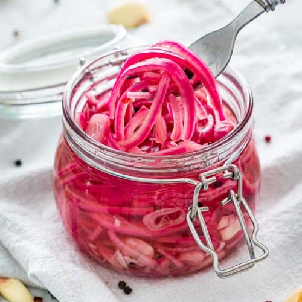

Pickled Red Onions

Description
Pickled red onions are a food item consisting of red onions pickled in a solution of vinegar and salt, often with other preservatives and flavourings.
- 1,5 dl water
- 0,75 dl sugar
- 0,5 dl vinegar
- 2 red onions
Steps
- Heat up the water, sugar and vinegar until the sugar dissolves.
- Peel and slice the red onions into thin circles.
- Add the onions to the vinegar solution and let rest for at least 20 min before serving.